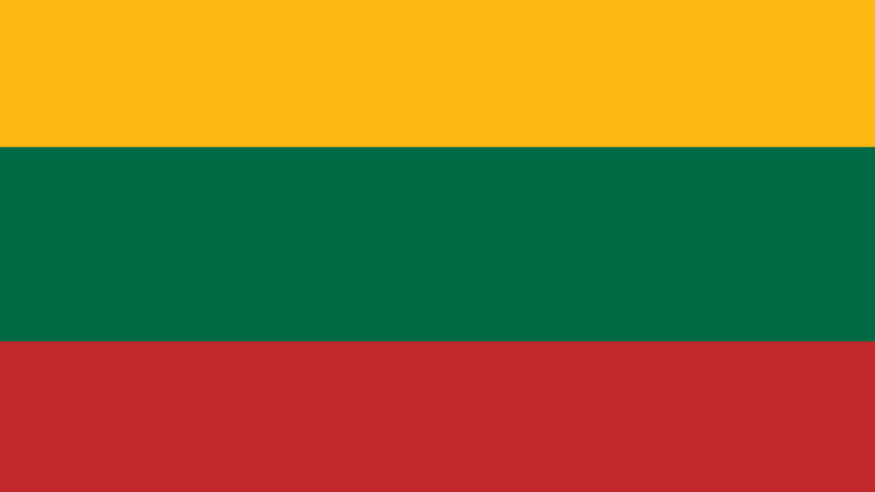

Pirmą kartą lietuvių vėliava istoriniuose šaltiniuose minima XIV a. pabaigoje - Vygando Marburgiečio kronikoje aprašant 1337 m. kryžiuočių kautynes su lietuviais prie Bajerburgo pilies (Veliuona). Tačiau ten nėra nurodyta, kaip Ji atrodė. Vėlesniuose istoriniuose šaltiniuose kaip Lietuvos Didžiosios Kunigaikštystės (LDK) vėliava apibūdinamas raudonas audeklas su baitu raiteliu abiejose pusėse. Tokia LDK vėliava išliko iki pat XVIII a. pabaigos. 1918 m. Lietuvos Taryba laikinaja Lietuvos valstybės vėliava  patvirtino projektą, kuriame numatytos trys vienodo pločio horizotalios juostos geltona, žalia, raudona. Pirmojoje Lietuvos Valstybės Konstitucijoje (1922 m., o po to ir 1928 m.) įrašyta viena valstybės vėliava geltonos, žalios ir raudonos spalvų junginys. Geltona spalva reiškia saulę, šviesą ir gerovę, žalia simbolizuoja gamtos grožį, laisvę ir viltį, raudona žemę, drąsą, pralietą už tėvynę kraują.
Tegul Tavo vaikai eina
Vien takais dorybės,
Tegul dirba Tavo naudai
Ir žmonių gėrybei.
Tegul saulė Lietuvoj
Tamsumas prašalina,
Ir šviesa, ir tiesa
Mūs žingsnius telydi.
Tegul meilė Lietuvos
Dega mūsų širdyse,
Vardan tos Lietuvos
Vienybė težydi!